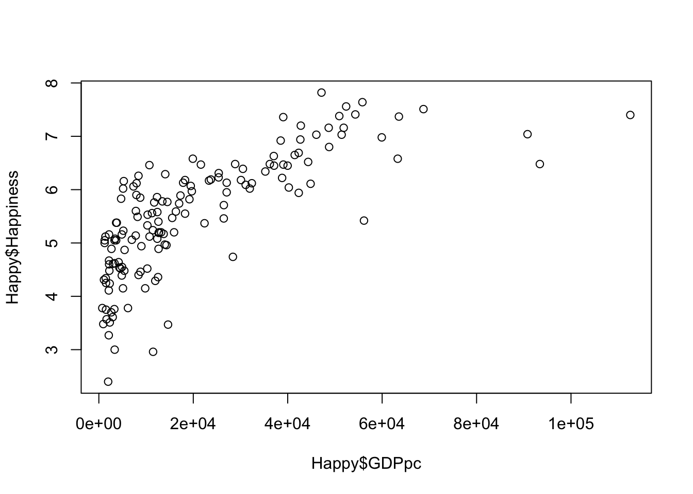
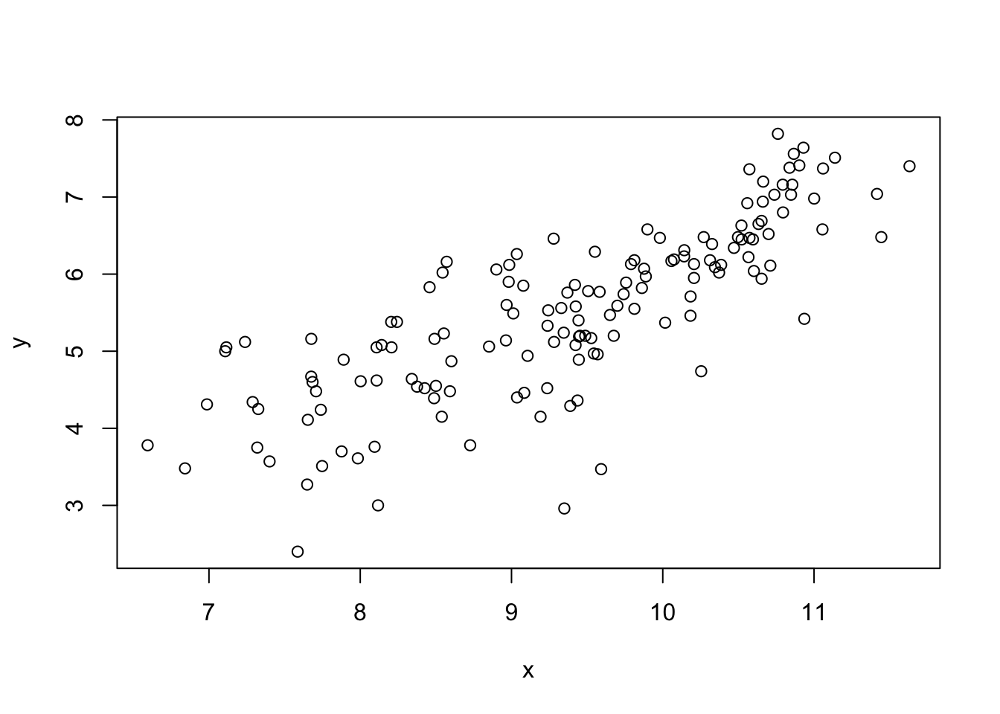
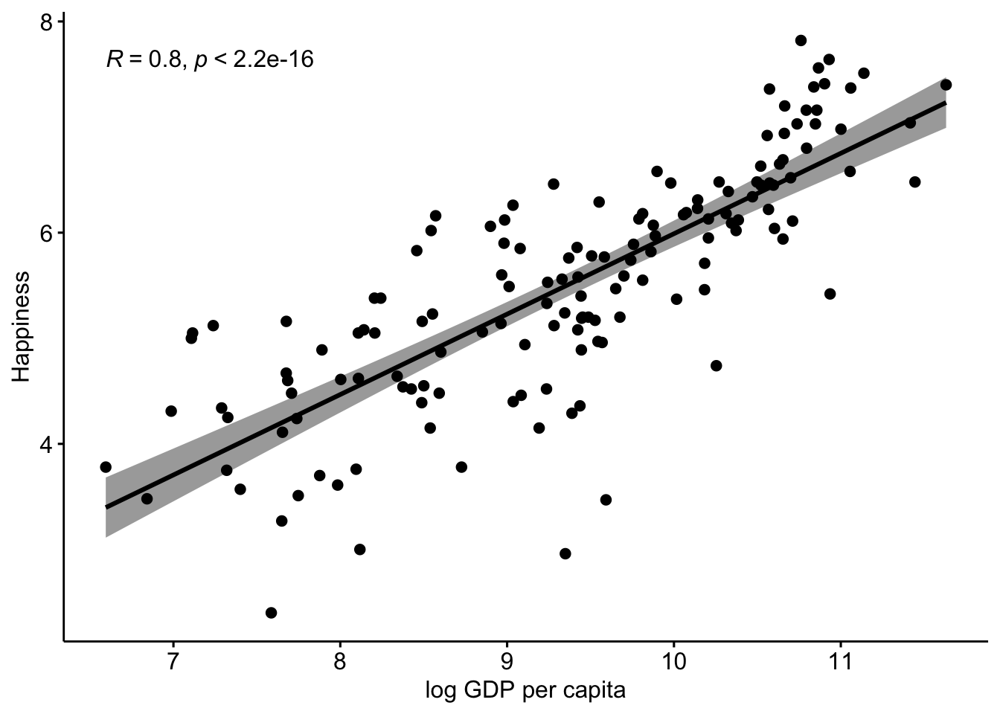
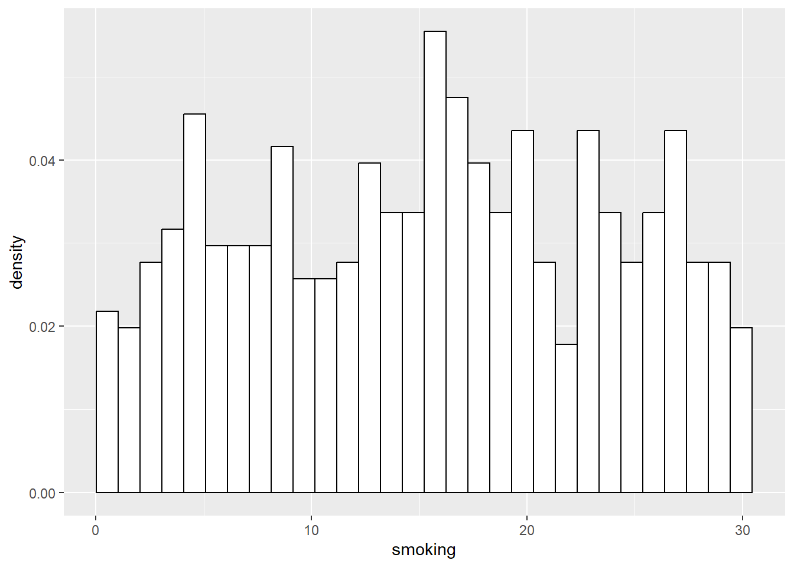
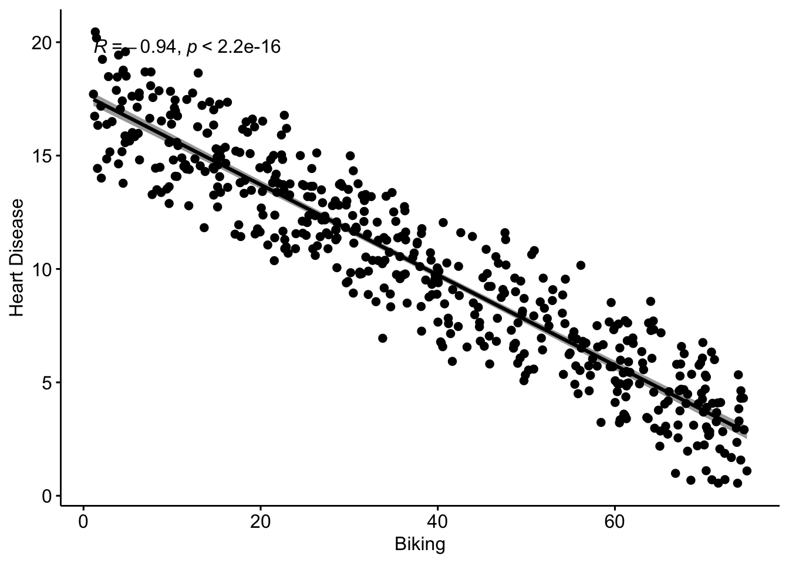
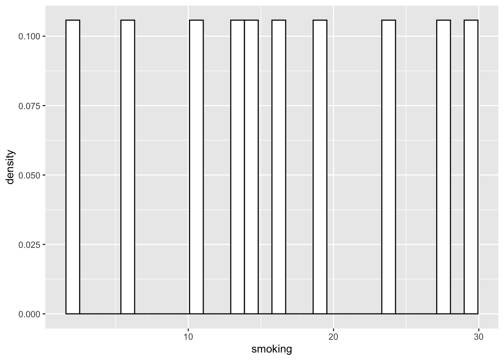
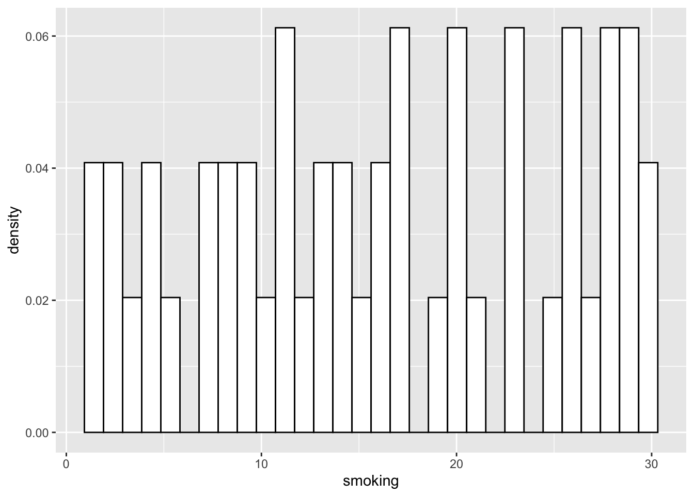

Chapter 5 Associations and Relationships
This chapter supplements the content in Lecture 5.
5.1 Correlations and Associations
First, let’s look at the basic concepts of correlation, using some data from the World Happiness Report, and GDP from the World Bank, all put together by the team at Our World in Data.
You can explore their work here: https://ourworldindata.org/
I can just double check the data by describing it. describe() is what I’ll reach for throughout the book whenever I’m looking at a data set for the first time — it gives a fuller statistical snapshot than just eyeballing the first few rows, including how much data is missing, which turns out to matter here.
## vars n mean sd median trimmed mad
## Country* 1 249 125.00 72.02 125.00 125.00 91.92
## Happiness 2 153 5.49 1.12 5.53 5.52 1.16
## GDPpc 3 197 20463.88 20717.34 12655.00 17037.01 13338.95
## Pop 4 242 59178643.60 331869505.09 5596196.00 12318073.38 8185922.38
## min max range skew kurtosis se
## Country* 1.0 2.490000e+02 2.480000e+02 0.00 -1.21 4.56
## Happiness 2.4 7.820000e+00 5.420000e+00 -0.26 -0.38 0.09
## GDPpc 731.0 1.125570e+05 1.118260e+05 1.58 2.55 1476.05
## Pop 809.0 4.663087e+09 4.663086e+09 11.65 152.44 21333379.77We’ve got 249 countries, with population, GDP per capita, and Happiness. There’s a fair bit of missing data, which you can see by looking at the numbers in the n column. That’s ok for now, as long as we are aware of it.
Let’s plot this data using a very basic scatterplot.

Interpretation: there’s seemingly an association here. As one variable increases, the other does too.
It’s worth noting that I have chosen to put GDPpc on the x-axis, which implies that the driver of Happiness is GDP. This replicates the way that most of the media articles that are regularly written on this kind of topic do it.
Nevertheless, this is just a scatterplot, so there is no real requirement to put any particular one of the variables on the x-axis — it’s just a correlation, and Chapter 4 is where we deal properly with why that’s not the same thing as causation.
Either way, all we have here is a basic data display. While, as I showed previously, simply displaying data can be very powerful, it is still only essentially an ‘eyeball’ analysis, and different people might draw different conclusions here (we’ll discuss that later on).
What we want to do, is have some sort of objective metric for the relationship, and for this, we have the correlation statistic. We met the idea of correlations in the last chapter, but here we can dig into them properly.
##
## Pearson's product-moment correlation
##
## data: Happy$Happiness and Happy$GDPpc
## t = 13.502, df = 146, p-value < 2.2e-16
## alternative hypothesis: true correlation is not equal to 0
## 95 percent confidence interval:
## 0.6636288 0.8092331
## sample estimates:
## cor
## 0.745184Here, we can see that the correlation is 0.75
But what does that mean? We can return to the slides for some explanation.
5.2 Introducing Nonlinear Associations
Let’s return to the scatterplot of GDPpc and Happiness

As the Economist analysis discussed in the lectures suggests, this association also looks kind of nonlinear.
However, unlike the Economist, we can also say that there are multiple ways to look at this:
First, you could take the Economist’s view that this is probably a nonlinear relationship. Indeed, we can check this out by transforming GDPpc and comparing the results between transformed and non-transformed data.
Let’s have a try at that. What we will do is transform the GDPpc variable using a log transform (i.e. taking the natural logarithm of GDPpc).
## vars n mean sd median trimmed mad
## Country* 1 249 125.00 72.02 125.00 125.00 91.92
## Happiness 2 153 5.49 1.12 5.53 5.52 1.16
## GDPpc 3 197 20463.88 20717.34 12655.00 17037.01 13338.95
## Pop 4 242 59178643.60 331869505.09 5596196.00 12318073.38 8185922.38
## GDPpc_log 5 197 9.38 1.14 9.45 9.41 1.33
## min max range skew kurtosis se
## Country* 1.00 2.490000e+02 2.480000e+02 0.00 -1.21 4.56
## Happiness 2.40 7.820000e+00 5.420000e+00 -0.26 -0.38 0.09
## GDPpc 731.00 1.125570e+05 1.118260e+05 1.58 2.55 1476.05
## Pop 809.00 4.663087e+09 4.663086e+09 11.65 152.44 21333379.77
## GDPpc_log 6.59 1.163000e+01 5.040000e+00 -0.25 -0.79 0.08We can see there is a new variable now, GDPpc_log, which is the log transformed GDPpc variable - basically the natural log of the original GDPpc variable.
Of course, there are many other possible transforms. I touched on them earlier, in Chapter 2, and I’ll elaborate a little more on it below, for now let’s rerun the plot using GDPpc_log

That relationship definitely looks more linear, and if that was my only criteria for deciding what to do with the data, I would definitely now run with this idea, as the Economist did in their article
With that in mind, let’s take a quick look at the correlations for these variables. First the original GDPpc, and then the log transformed one.
##
## Pearson's product-moment correlation
##
## data: Happy$Happiness and Happy$GDPpc
## t = 13.502, df = 146, p-value < 2.2e-16
## alternative hypothesis: true correlation is not equal to 0
## 95 percent confidence interval:
## 0.6636288 0.8092331
## sample estimates:
## cor
## 0.745184##
## Pearson's product-moment correlation
##
## data: Happy$Happiness and Happy$GDPpc_log
## t = 15.916, df = 146, p-value < 2.2e-16
## alternative hypothesis: true correlation is not equal to 0
## 95 percent confidence interval:
## 0.7287785 0.8487456
## sample estimates:
## cor
## 0.7964703We can see that the association is stronger (the correlation is higher) for the log GDPpc variable, although to be honest, it is not a very big difference here, compared to other data sets that I have seen discussed in the media. That’s interesting in itself (note we are using 2020 data, so maybe the pandemic has something to do with it?)
However, transformations of data are kind of a complicated topic though. In essence, what we are doing is changing the distribution of one (or more) of the variables, in a systematic way, in order to convert a non-linear relationship (which may be unable to be tested with methods like correlation and regression) into a linear one.
There are many different types of transformations available to you, and the one you choose depends on the form of the nonlinearity. A log transform converts an exponential (or similar) relation into a linear one. But, there are specific transforms for many different forms. Oftentimes, it’s not always obvious what exactly to do, and people often default to transforming any nonlinear-looking relationship, or highly skewed variable, using log or maybe the quadratic (squaring). It’s not really that simple though, and I think we need to be a bit more logical and theory-driven on why we transform variables.
In this case, I admit that the logic makes sense, that there is still a relationship between GDPpc and happiness at the top end, but you just have to increase GDPpc by a lot more to get the same change in happiness, compared to the change needed at the lower end of GDPpc. And, making that transform to come to that conclusion actually makes a difference to how we think of the influence of GDPpc on happiness, and could concievably lead to policy changes compared to the prior non-transformed analysis.
Even so, I have always had a slightly different possibility on my mind. In fact, it may be that there are two distinct groups of country, low and high income, and different linear associations within those groups. That’s a similar-ish idea to the nonlinear one, but it is a bit different, and I actually prefer that idea. A nice challenge would be to work out a way to test which of the two alternative explanations is actually better supported by the data…
Maybe I’ll leave that for another day though.
We can return to the slides for a bit more discussion.
5.3 Regression
We can add a regression line to the GDPpc / Happiness scatterplot, for some extra information over the correlation.

We can also do this with the log GDPpc to compare.

You can see that using the log GDPpc variable does improve things, but not by that much in my view. That said, it’s clear that the line is a bit more ‘precise’ (the errors are lower which can be seen by the narrower shaded regions). So, if we are looking for the ‘best’ model, it’s pretty clear that the log GDPpc model is better than the simple GDPpc model.
Either way, the regression line adds a layer of information on to the correlation, which allows us to predict y from x.
How so? Well, let’s add the regression equation to the chart to see:

This adds an intercept, and with that plus the coefficient we have all that we need to plot a straight line, which we can extrapolate to higher values of GDPpc (although remember this is the logged GDP variable) and predict what the happiness scores would be.
This is obviously viable to the extent we can justify the relationship, and also within the parameters of our variables, and how confident we are that the relationship is consistent at all levels of the variables.
return to the slides
5.4 Multiple Regression
Here, we will use a simple three-variable set of simulated data, which represents rates of smoking, rates of cycling, and heart disease incidence. This data is available from: https://www.scribbr.com/statistics/linear-regression-in-r/
Remember, this is simulated data not real data.
## vars n mean sd median trimmed mad min max range
## ...1 1 498 249.50 143.90 249.50 249.50 184.58 1.00 498.00 497.00
## biking 2 498 37.79 21.48 35.82 37.71 27.51 1.12 74.91 73.79
## smoking 3 498 15.44 8.29 15.81 15.47 10.86 0.53 29.95 29.42
## heart.disease 4 498 10.17 4.57 10.39 10.18 5.42 0.55 20.45 19.90
## skew kurtosis se
## ...1 0.00 -1.21 6.45
## biking 0.07 -1.22 0.96
## smoking -0.04 -1.12 0.37
## heart.disease -0.03 -0.93 0.20Next, let’s run three simple regressions among the three variables



Remember, these are simple regression lines, with bivariate scatterplots. What I mean, is the effect of biking on heart disease does not take account of the effect of smoking on heart disease. What we need to do is run a model which takes account of both the predictors, as we can explain on the slide-deck…
Now we can run the Multiple Regression Model
##
## Call:
## lm(formula = heart.disease ~ biking + smoking, data = Heart)
##
## Residuals:
## Min 1Q Median 3Q Max
## -2.1789 -0.4463 0.0362 0.4422 1.9331
##
## Coefficients:
## Estimate Std. Error t value Pr(>|t|)
## (Intercept) 14.984658 0.080137 186.99 <2e-16 ***
## biking -0.200133 0.001366 -146.53 <2e-16 ***
## smoking 0.178334 0.003539 50.39 <2e-16 ***
## ---
## Signif. codes: 0 '***' 0.001 '**' 0.01 '*' 0.05 '.' 0.1 ' ' 1
##
## Residual standard error: 0.654 on 495 degrees of freedom
## Multiple R-squared: 0.9796, Adjusted R-squared: 0.9795
## F-statistic: 1.19e+04 on 2 and 495 DF, p-value: < 2.2e-16First, we look at the R2, or more accurately the Adjusted R2, which takes account of the number of variables (they are usually very similar). The R2 essentially measures how much variation in your Dependent Variable is explained by your model (i.e. your regression predictors). It ranges from 0 to 1, and higher means more variance explained. Here we see a very high AdjR2 of 0.98, almost 1. This is simulated data of course, and it is quite rare to see such high R2s in real data. For the most part, you want R2 to be high, but if it gets too high (say above 0.8 but this is not a ‘rule’) you might start to get worried about whether your IVs and DVs are actually distinct things. Apart from that, standards of what makes an acceptable R2 are highly dependent on the context and field you are working in, and you’ll no doubt see lots of different ideas throughout your career on what is acceptable. Of course, that only scratches the surface of this issue, and I’ll say more in the lecture slides.
Next, we look at the coefficients, and they can be interpreted as follows:
A 1-unit increase in biking is associated, on average, with a 0.2-unit decrease in heart disease, holding smoking constant. A 1-unit increase in smoking is associated, on average, with a 0.17-unit increase in heart disease, holding biking constant.
Notice the wording there. It’s tempting to say that biking leads to less heart disease, and in everyday conversation most of us would. But a regression coefficient on its own describes how the variables move together in these data, after adjusting for the other predictors in the model. “Holding smoking constant” is the stratification from Section 4.1.2, done inside an equation instead of by splitting into bands, and it has the same limit: it only deals with the variables that are actually in the model. Whether biking causes less heart disease is a question about the design and the argument, not about the regression output. With simulated data the question is academic. With real data, it’s the whole question.
Of course, what these ‘units’ mean depends on how the variables were measured. That’s exactly why it’s hard to say from these numbers alone whether either effect is large or small: we’d need to know what a unit of biking, smoking or heart disease actually represents.
However, because the scales of the variables are different, its not really possible to compare the sizes of the effects. So to some extent we don’t know which of the two variables has the ‘bigger’ effect here, relatively at least.
To do that, we need to standardize the coeffiecients, which basically means putting all the variables on the same scale. Beforehand, they all were on different scales, which you can see by going back up and looking at the range, mean, and standard deviation of the original variables. You can see for yourself they are all different.
We can solve this issue by creating a new set of standardized data, and running the model on that, as follows:
## vars n mean sd median trimmed mad min max range skew
## ...1 1 498 0 1 0.00 0 1.28 -1.73 1.73 3.45 0.00
## biking 2 498 0 1 -0.09 0 1.28 -1.71 1.73 3.43 0.07
## smoking 3 498 0 1 0.05 0 1.31 -1.80 1.75 3.55 -0.04
## heart.disease 4 498 0 1 0.05 0 1.19 -2.10 2.25 4.35 -0.03
## kurtosis se
## ...1 -1.21 0.04
## biking -1.22 0.04
## smoking -1.12 0.04
## heart.disease -0.93 0.04You know these variables are standardized as they now all have a mean of 0 and a standard deviation of 1. Now, let’s run our model on this standardized data set.
##
## Call:
## lm(formula = heart.disease ~ biking + smoking, data = std_Heart)
##
## Residuals:
## Min 1Q Median 3Q Max
## -0.47658 -0.09762 0.00792 0.09671 0.42283
##
## Coefficients:
## Estimate Std. Error t value Pr(>|t|)
## (Intercept) -8.205e-16 6.410e-03 0.00 1
## biking -9.403e-01 6.418e-03 -146.53 <2e-16 ***
## smoking 3.234e-01 6.418e-03 50.39 <2e-16 ***
## ---
## Signif. codes: 0 '***' 0.001 '**' 0.01 '*' 0.05 '.' 0.1 ' ' 1
##
## Residual standard error: 0.1431 on 495 degrees of freedom
## Multiple R-squared: 0.9796, Adjusted R-squared: 0.9795
## F-statistic: 1.19e+04 on 2 and 495 DF, p-value: < 2.2e-16You can see the things that have changed are the ‘Estimates’, which are now standardized.
In decimal, they are -0.94 for biking and 0.32 for Smoking.
The correct interpretation of these standardized effects is that for every 1SD increase in biking, you expect a 0.94SD decrease in heart disease, and for every 1SD increase in smoking, you would expect a 0.32 increase in heart disease.
So, in this sample, biking has a much larger standardised association with heart disease than smoking does (although in the opposite direction). One caution, though. Standardised coefficients are measured in standard deviations, and those standard deviations come from this particular sample. If another sample had much more variation in smoking, say, the standardised coefficient for smoking would change even if the underlying relationship didn’t. So comparisons like this are specific to the sample, and are safest between samples that look alike.
5.5 Visualizing Multiple Regression
There are loads of different ways to visualize multiple regression. It’s not trivial, because we have more than two variables, so we can’t use the techniques we used already.
Some people like to use 3D-style plots, which look cool, but are not always easy to interpret, and take quite a lot of extra work, for what I would say is not that much payoff (if any).
In this case, we can use a pretty simple visualization, where we could plot the relationship of biking to heart disease at different levels of smoking.
This would be a fairly typical way to do things if we thought the relationship between biking and heart disease changed according to the level of smoking, in which case it would be a moderator. Here, it doesn’t really work that way, but it’s a cool visualization regardless. It does require some data prep, but not that much, and I took the basic idea from the website where I sourced the data: https://www.scribbr.com/statistics/linear-regression-in-r/

Here, we can see that the effect of smoking is really just to raise the likelihood of heart disease, however much biking you do.
So, for a given person who bikes a given amount, if they smoke more they will have a higher risk than a person who bikes the same amount but smokes less.
But, for a given smoker, the more they bike, the lower their risk of heart disease, to the extent that if a heavy smoker bikes enough, their actual risk of heart disease could even be lower than a non-smoker who does not bike at all.
Don’t forget, this is not real data, but the point stands. Get on your bike.
5.6 Reading the literature
Almost every quantitative paper based on survey or archival data has the same first table. It lists every variable in the study, gives its mean and standard deviation, and then fills a triangle with the correlations between every pair. It’s usually Table 1, and most readers skip straight past it to the regressions. I think that’s a mistake. Table 1 is the rawest view of the data you’ll ever get from a paper, and almost everything that follows is built out of it. This section is about reading that table, and the regression tables that come after it, with the ideas from this chapter in hand.
5.6.1 Where you’ll meet this
Table 1: the correlation matrix. I’ll leave the means and standard deviations aside and focus on the correlations. Three things are worth checking. First, find the correlation between the main predictor and the outcome. If the paper’s central claim is that X drives Y, you’d usually expect X and Y to be correlated. If they aren’t, but X becomes significant once other variables enter the regression, something unusual is going on. It can be real, but the paper should explain it. Second, look at how strongly the predictors correlate with each other, because very high correlations there foreshadow the multicollinearity problem below. Third, look at how the control variables relate to the main ones. A control that correlates with almost nothing is doing very little work, while one that correlates strongly with both X and Y is exactly the kind of third variable Chapter 4 worried about. It’s also worth knowing that, for ordinary regression, the correlations, standard deviations and sample size are enough to reproduce the main estimates. So a paper that leaves them out is withholding the table that would let you check its work.
Alpha on the diagonal. Many Table 1s put a number on the diagonal, where each variable would otherwise correlate with itself. It’s usually Cronbach’s alpha, a measure of the reliability of a multi-item scale. Alpha is built from the correlations between the items in a scale: the more consistently they correlate with each other, and the more items there are, the higher it goes. You’ll nearly always see it judged against a threshold of .70. That threshold is a convention, not a law, and alpha is regularly asked to carry more than it can. A high alpha doesn’t show that the items measure a single thing, still less the thing the authors say they measure, and a long enough scale can reach a respectable alpha even when its items are only modestly related (Lee and Hooley 2005). I’ll admit to a wry smile at this point. That paper has been cited, more than once, as the authority for the .70 threshold. It’s the Armstrong and Overton story from Chapter 4 again, only this time it’s happening to me.
Multicollinearity. When predictors are strongly correlated with each other, a regression struggles to separate their effects, because the data contain little information about what happens when one moves and the other doesn’t. Papers usually check this with variance inflation factors (VIFs), declaring values below 10, or sometimes 5, to be fine. Two things are worth knowing. First, in the textbook case multicollinearity doesn’t bias the estimates. It makes them less precise by inflating their standard errors, so its main cost is that real effects become harder to detect. Second, the thresholds are rules of thumb, and a well-known review argued that even much higher VIFs don’t, on their own, invalidate a regression (O’Brien 2007). There is a catch, though. More recent work shows that when a model leaves out something the correlated predictors share, the correlation between them can produce false positives, whatever the VIFs say (Kalnins and Praitis Hill 2025). So “all VIFs were below 10” is a reasonable thing to report and a weak thing to rely on.
Common method variance. If the predictor and the outcome come from the same questionnaire, completed by the same person at the same time, some of their correlation may come from the method itself: the respondent’s mood, their wish to appear consistent, or a habit of agreeing with statements. This is common method variance, and it’s probably the most frequent criticism made of survey research in management. It’s a real issue, but it has gathered its own myths. It doesn’t automatically inflate every relationship: depending on how it affects each measure, it can shrink a relationship as well as inflate it. And it can’t manufacture an interaction or a curved effect out of nothing; if anything, it makes those harder to find (Siemsen et al. 2010). Some researchers have argued that the whole concern has been overstated (Spector 2006). The most common defence you’ll see is Harman’s single-factor test, which checks whether one factor accounts for most of the variation across all the items. It’s usually cited to a review that in fact judged it insensitive (Podsakoff et al. 2003), which is the same fate you saw Armstrong and Overton suffer in Chapter 4. The stronger defences are about design: measuring the predictor and the outcome at different times, or getting them from different sources.
R². You met R² in this chapter as the proportion of variation in the outcome that the model explains. In management papers you’ll often see values that look disappointingly small, .10 or .15, sometimes less. That isn’t automatically a problem. If the aim is to test whether a particular relationship exists, rather than to predict the outcome, a model can explain a small share of the total variation and still tell you something real. Most of what people and firms do has many causes. If the aim is prediction, a low R² matters a great deal more.
Hierarchical regression and ΔR². Many papers enter variables in blocks: control variables first, then the main predictors, and sometimes interactions last. Each block is a step, and the paper reports how much R² rises at each one (ΔR², “delta R-squared”), usually with a test of whether the rise is significant. The logic is sensible: how much do my variables explain beyond the controls? But notice what it builds in. Any variation the controls share with the main predictors is credited to the controls, because they went in first. Change the order of entry and the ΔR² changes too. So a small ΔR² for the main predictors can say as much about the controls as about the theory. One naming trap catches almost everyone: “hierarchical regression” in this sense has nothing to do with hierarchical linear models, which are models for nested data such as employees within firms. Same word, completely different methods, so check which one a paper means.
5.6.2 The connection back
Almost everything in this section is correlation in a different hat. Alpha is the correlations among a scale’s items. VIFs come from the correlations among the predictors. Common method variance is the worry that some correlations are partly an artefact of how they were measured. R² is built from the correlations between the outcome and the predictors. That’s why Table 1 deserves far more attention than it usually gets.
5.6.3 Questions worth asking
- Do the key variables actually correlate in Table 1? If not, how do the authors explain a significant effect in the regression?
- Where did each variable come from? If the predictor and the outcome share a respondent, a questionnaire and a moment, what did the design do about it, beyond a statistical test?
- What do we know about each measure, apart from its alpha?
- Which predictors are strongly correlated with each other? Do the authors claim to have separated their effects, and how convincingly?
- In a hierarchical regression, what went in first? Would the story change if the order changed?
5.6.4 One red flag
Look along the rows of Table 1 for two variables the paper treats as different things but which correlate at .80 or above. Suppose each has an alpha of .85. With measures that reliable, the highest correlation you could expect to observe between them is also about .85, even if they were the same thing. So a correlation of .85 means the data can’t tell them apart. The paper may then be testing whether a construct predicts a slightly relabelled version of itself. It isn’t rare, and it hides in plain sight in the one table most people skip.
5.6.5 If you want to read more
Paul Spector’s “Method variance in organizational research: Truth or urban legend?” (Spector 2006) is a short, sceptical and very readable look at how common method variance became a reflex rather than a question. And, at the risk of immodesty, Graham Hooley and I wrote about how coefficient alpha, and the .70 threshold that goes with it, became something close to mythology in marketing research (Lee and Hooley 2005).